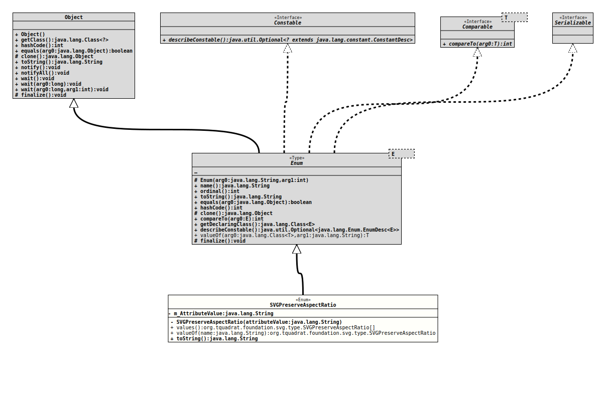

Module org.tquadrat.foundation.svg
Package org.tquadrat.foundation.svg.type
Enum Class SVGPreserveAspectRatio
- All Implemented Interfaces:
Serializable,Comparable<SVGPreserveAspectRatio>,Constable
@ClassVersion(sourceVersion="$Id: SVGPreserveAspectRatio.java 980 2022-01-06 15:29:19Z tquadrat $")
@API(status=STABLE,
since="0.0.5")
public enum SVGPreserveAspectRatio
extends Enum<SVGPreserveAspectRatio>
{kind=link}
Possible values for the SVG attribute
"preserveAspectRatio".
- Author:
- Thomas Thrien (thomas.thrien@tquadrat.org)
- Version:
- $Id: SVGPreserveAspectRatio.java 980 2022-01-06 15:29:19Z tquadrat $
- Since:
- 0.0.5
- See Also:
- UML Diagram
-

UML Diagram for "org.tquadrat.foundation.svg.type.SVGPreserveAspectRatio"
{kind=link}
-
Nested Class Summary
Nested classes/interfaces inherited from class java.lang.Enum
Enum.EnumDesc<E extends Enum<E>> -
Enum Constant Summary
Enum ConstantsEnum ConstantDescriptionDo not force uniform scaling.Force uniform scaling.
Align the<min-x>+<width>of the element's viewBox with the maximum x type of the viewport.
Align the<min-y>+<height>of the element's viewBox with the maximum y type of the viewport.Force uniform scaling.
Align the<min-x>+<width>of the element's viewBox with the maximum x type of the viewport.
Align the midpoint y type of the element's viewBox with the midpoint y type of the viewport.Force uniform scaling.
Align the<min-x>+<width>of the element's viewBox with the maximum x type of the viewport.
Align the<min-y>of the element's viewBox with the smallest y type of the viewport.Force uniform scaling.
Align the midpoint x type of the element's viewBox with the midpoint x type of the viewport.
Align the<min-y>+<height>of the element's viewBox with the maximum y type of the viewport.Force uniform scaling.
Align the midpoint x type of the element's viewBox with the midpoint x type of the viewport.
Align the midpoint y type of the element's viewBox with the midpoint y type of the viewport.
This is the default setting.Force uniform scaling.
Align the midpoint x type of the element's viewBox with the midpoint x type of the viewport.
Align the<min-y>of the element's viewBox with the smallest y type of the viewport.Force uniform scaling.
Align the<min-x>of the element's viewBox with the smallest x type of the viewport.
Align the<min-y>+<height>of the element's viewBox with the maximum y type of the viewport.Force uniform scaling.
Align the<min-x>of the element's viewBox with the smallest x type of the viewport.
Align the midpoint y type of the element's viewBox with the midpoint y type of the viewport.Force uniform scaling.
Align the<min-x>of the element's viewBox with the smallest x type of the viewport.
Align the<min-y>of the element's viewBox with the smallest y type of the viewport. -
Field Summary
Fields -
Constructor Summary
ConstructorsModifierConstructorDescriptionprivateSVGPreserveAspectRatio(String attributeValue) Creates a newSVGPreserveAspectRatioinstance. -
Method Summary
Modifier and TypeMethodDescriptionfinal StringtoString()static SVGPreserveAspectRatioReturns the enum constant of this class with the specified name.static SVGPreserveAspectRatio[]values()Returns an array containing the constants of this enum class, in the order they are declared.
-
Enum Constant Details
-
NONE
Do not force uniform scaling. Scale the graphic content of the given element non-uniformly if necessary such that the element's bounding box exactly matches the viewport rectangle. -
XMIN_YMIN
Force uniform scaling.
Align the<min-x>of the element's viewBox with the smallest x type of the viewport.
Align the<min-y>of the element's viewBox with the smallest y type of the viewport. -
XMID_YMIN
Force uniform scaling.
Align the midpoint x type of the element's viewBox with the midpoint x type of the viewport.
Align the<min-y>of the element's viewBox with the smallest y type of the viewport. -
XMAX_YMIN
Force uniform scaling.
Align the<min-x>+<width>of the element's viewBox with the maximum x type of the viewport.
Align the<min-y>of the element's viewBox with the smallest y type of the viewport. -
XMIN_YMID
Force uniform scaling.
Align the<min-x>of the element's viewBox with the smallest x type of the viewport.
Align the midpoint y type of the element's viewBox with the midpoint y type of the viewport. -
XMID_YMID
Force uniform scaling.
Align the midpoint x type of the element's viewBox with the midpoint x type of the viewport.
Align the midpoint y type of the element's viewBox with the midpoint y type of the viewport.
This is the default setting. -
XMAX_YMID
Force uniform scaling.
Align the<min-x>+<width>of the element's viewBox with the maximum x type of the viewport.
Align the midpoint y type of the element's viewBox with the midpoint y type of the viewport. -
XMIN_YMAX
Force uniform scaling.
Align the<min-x>of the element's viewBox with the smallest x type of the viewport.
Align the<min-y>+<height>of the element's viewBox with the maximum y type of the viewport. -
XMID_YMAX
Force uniform scaling.
Align the midpoint x type of the element's viewBox with the midpoint x type of the viewport.
Align the<min-y>+<height>of the element's viewBox with the maximum y type of the viewport. -
XMAX_YMAX
Force uniform scaling.
Align the<min-x>+<width>of the element's viewBox with the maximum x type of the viewport.
Align the<min-y>+<height>of the element's viewBox with the maximum y type of the viewport.
-
-
Field Details
-
m_AttributeValue
The attribute type.
-
-
Constructor Details
-
SVGPreserveAspectRatio
Creates a newSVGPreserveAspectRatioinstance.- Parameters:
attributeValue- The attribute type.
-
-
Method Details
-
values
Returns an array containing the constants of this enum class, in the order they are declared.- Returns:
- an array containing the constants of this enum class, in the order they are declared
-
valueOf
Returns the enum constant of this class with the specified name. The string must match exactly an identifier used to declare an enum constant in this class. (Extraneous whitespace characters are not permitted.)- Parameters:
name- the name of the enum constant to be returned.- Returns:
- the enum constant with the specified name
- Throws:
IllegalArgumentException- if this enum class has no constant with the specified nameNullPointerException- if the argument is null
-
toString
- Overrides:
toStringin classEnum<SVGPreserveAspectRatio>
-
{kind=link}
{kind=link}
{kind=link}
{kind=link}
{kind=link}
{kind=link}
{kind=link}
{kind=link}
{kind=link}
{kind=link}
{kind=link}
{kind=link}
{kind=link}